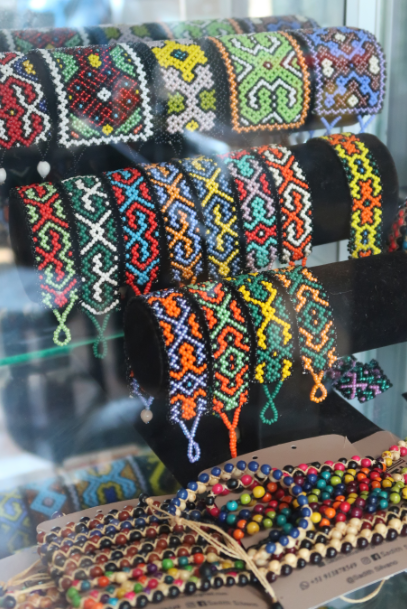
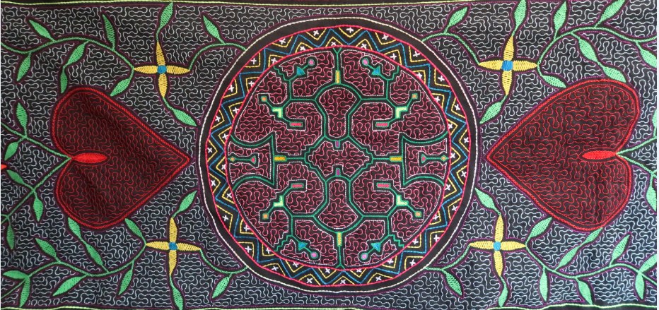
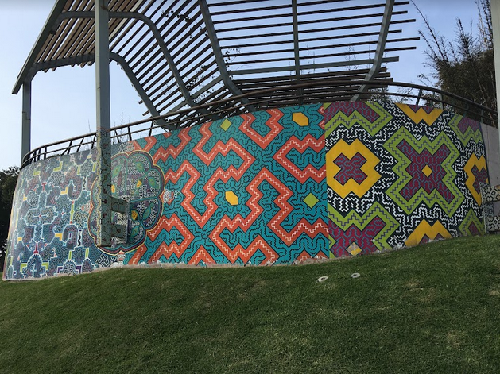
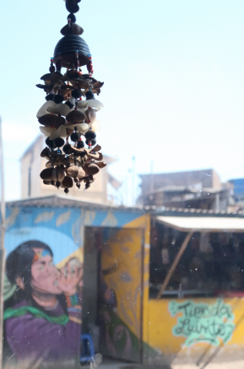

El arte es una mujer de fuerza inagotable:
Sadith Silvano y el arte visionario shipibo-konibo
En el principio era la serpiente.
Una anaconda enorme se deslizaba en la oscuridad. Los diseños en su piel brillaban como vivos. La anaconda estaba cantando sobre ellos y los sonidos goteaban uno tras otro en la oscuridad alrededor de su cuerpo gigante. Cada sonido era un diseño y cuando todos ya fueron cantados, se juntaron y materializaron creando a los hombres y todo el Universo. Así habla de la creación del mundo una leyenda contada por los shipibo-konibo, la gente nativa de las orillas del río Ucayali en la selva amazónica del Perú. Son uno de los grupos étnicos más numerosos de la Amazonia peruana con una población total aproximada de 35 000 individuos y actualmente el grupo más presente en grandes centros urbanos como Lima, Pucallpa o Yarinacocha. Su lengua pertenece a la familia lingüística pano. Los estudios indican que los primeros ancestros de los shipibo-konibo llegaron a las orillas del río Ucayali hace unos 1 500 y 2 000 años.
Lo que distingue a los shipibo-konibo entre otros grupos étnicos de la Amazonia es su extraordinario arte basado en los diseños llamados kené. La anaconda canta sobre esos diseños creando el mundo, ellos mismos también cubren su cuerpo. Kené no se refiere solamente a una serie de símbolos o formas geométricas que cumplen mero papel decorativo. Es un completo sistema de conocimiento sobre el mundo, la historia, la estética y las tradiciones de los shipibo-konibo. Es un sistema que transmite información sobre su relación con el Universo, la consciencia, otro ser humano y la tierra que pisan y de la cual vienen. Es una manera de honrar a los ancestros y mantener la identidad frente a la modernidad. Finalmente, es una manera de sobrevivir económicamente.
La palabra kené o kewé significa „diseño” y en general se refiere al grupo de motivos geométricos tradicionales que cubren las superficies de distintos tipos: desde la piel humana, las telas, la cerámica, los objetos de uso cotidiano, la bisutería, los objetos rituales, hasta las paredes de los edificios y casas. Los diseños kené pueden ser pintados, bordados, tejidos: existen varias técnicas de su ejecución.
Estuve fascinada con la belleza hipnótica de kené y por este motivo fui a visitar el barrio de Cantagallo en Lima donde viven más de 200 familias shipibo-konibo. Allí visité a la artista Sadith Silvano. La conocí cuando ella estaba de visita en el Valle Sagrado cerca de Cuzco. Más tarde, sentada en el avión que volaba de Cuzco a Lima, no podía olvidarme de ese encuentro. Mirando por la ventanilla unas lagunas brillantes y montañas de color rojo y marrón que se extendían abajo, entendí que no podía salir del Perú sin intentar a comprender lo que creaba Sadith. Sus trabajos se caracterizaban por un magnetismo extraño. Eran completamente distintos a todos los productos artesanales que había visto en los mercados peruanos. Cuando Sadith cantaba, recorriendo con el dedo los diseños relacionados con la anaconda primordial, algo vibraba en mi pecho, como si hubiese tocado el centro del corazón, este punto universal que tiene cada uno de nosotros, no importa de dónde viene.
Cuando llegué a Cantagallo, Sadith no estaba, había salido. Tuve que esperarla un rato. Estaba en la calle, mirando bonitos murales que cubrían las paredes de las casas: uno con jaguar, otros con unas flores exóticas, peces, aves. Todo estaba cubierto de polvo, el aire estaba seco, no había acera en la calle, pero en las paredes florecía la selva y vibraban los coloridos laberintos kené. En aquel momento vi a Sadith, acercándome con cubos de pintura en las manos (comprados para su siguiente mural) y gran sonrisa en la cara. En las orejas llevaba bonitos aretes kené que brillaban con colores como las plumas de una ave exótica. „Hola, amiga.” — dijo.
Una de las casas de Cantagallo, cubierta con murales amazónicos.
La visité para hablar del arte y vine con una lista de preguntas apuntadas en una hoja de papel. Pero cuando nos sentamos en su casa, en la habitación que cumplía el papel de un salón, un taller y una sala de presentación al mismo tiempo, la conversación tomó otra dirección. Desde el primer momento Sadith sabe qué quiere decir, ella empieza la entrevista y hablamos como dos mujeres, dos artistas, dos sensibles seres humanos. Resultó que el arte era una mujer de fuerza inagotable que fluye desde su corazón al mío y al revés.
Tradicionalmente solo las mujeres crean kené (pocos hombres lo hacen, aunque hay excepciones). Los conocimientos se transmiten de una generación a otra, las nietas e hijas observan el trabajo de las abuelas y madres. Es un arte que florece en la comunidad, aunque las composiciones son individuales y cada artista desarrolla su propio estilo con el tiempo. Sadith dice que los shipibo-konibo a ninguna parte van solos: lo más importante es la comunidad, la familia, los amigos, el grupo de personas cercanas. De todo eso nace la fuerza y la creatividad cuyas fuentes son la identidad, la tradición y el amor. El arte shipibo personifica todas estas cosas.
Sadith y sus hermanas aprendieron kené con su madre. „La madre tiene la obligación a enseñar a su hija o a su hijo, a transmitir esos conocimientos tradicionales para no perder la identidad cultural que es muy importante para nosotros. Ese conocimiento es ancestral, milenario. Ni en la universidad o escuela lo vemos.” — subraya Sadith. Su aprendizaje empezó a los tres años. Primero se dedicaba a perforar las semillas para la bisutería. Luego hacía las primeras pulseras y cerámicas. Se acuerda de que su mamá era exigente como profesora. Siete niñas estudiaban diligentemente bajo su vigilancia para llegar a la maestría. No es posible alcanzarlo en un día: la maestría significa años de pruebas y errores, cansancio y recuperación de fuerzas, largas horas pasadas bordando, copiando diseños, recogiendo plantas para hacer pinturas de cerámica. Sadith se ríe que en aquellos tiempos perdía la competición con sus hermanas. Trabajaban más rápido, eran más precisas que ella. Hasta hoy cinco de ellas viven del arte, pero resulta que Sadith es la que más ha unido su vida con la tradición de kené en varios niveles: emocional, espiritual, material y visual.

Pulseras con motivos tradicionales de kené.
Los shipibo-konibo tienen una sociedad matriarcal. La energía de la cósmica anaconda-madre es femenina. Las mujeres son artistas, son un elemento imprescindible que crea la realidad, la embellece con kené, le brinda nuevo sentido energético y la sana de esta manera. Los diseños creados en las superficies reales reflejan los diseños no materiales accesibles a través de la toma de plantas medicinales llamadas rao. La energía de los diseños percibidos en la mente, los sueños y la imaginación procede directamente de estas plantas. Los shipibo-konibo la llaman koshi. Es una fuerza invisible, pero positiva. La harmonía plástica de kené materializa la energía koshi que tiene como objetivo embellecer y sanar. Hay muchas plantas rao utilizadas en las ceremonias, sin embargo, para los shipibo las más importantes son la ayahuasca y piripiri. Ayahuasca, llamada nishi, permite ver la energía colorida de las plantas y su forma de una soga retorcida es identificada con „(…) la anacónda cósmica ronin, el ser primordial, ‚madre’ del ayahuasca y de las aguas, fuente acuática originaria de todos los diseños existentes, en el pasado, el presente y el futuro.”* Piripiri, llamada waste, agudiza la vista, trae visiones y, según los shipibo, brotó de las cenizas de una soga quemada de la ayahuasca. Todas las plantas rao son llamadas „la medicina”: no se perciben como drogas de carácter recreativo. Son plantas visionarias y su uso tiene un carácter ceremonial. Hay que tratarlas con gran respeto que merecen, ya que pueden vengarse de un usuario inapropiado. De esta manera una experiencia psicodélica se convierte en un ritual holístico para la mente y el cuerpo.
Sadith subraya que las plantas rao son imprescindibles para entender correctamente el concepto de kené. „(Primero), tu mamá te prepara.” — dice. — „Como somos jovencitos, no sabemos nada. Con el tiempo, que vas adaptando, tú mismo eres un trome. Eso viene a través de la planta medicinal que te cura los ojos: la planta de piripiri, (utilizada) especialmente para ojo, para ver diseños. Ves lo que quieres hacer y lo reflejas. Trabajas visionalmente. Así yo aprendi, así de la nada.”
Sobre su percepción de ayahuasca me cuenta más al explicar en qué consiste el canto tradicional kené: „Hay tres tipos de canto: cantos icaros**, mashá*** y cantos-bromas. El canto icaro es cuando tomas ayahuasca. Te estas conectando espiritualmente, estás entrando al mundo de la medicina. Te conectas y empiezas como fluir. Te sueltas. (La sustancia) empieza como descorrer por todas tus venas, al interior de tu espíritu, te conectas y empiezas a cantar. Cuando uno canta a través de la toma de medicina, tú estás abriendo. Estás llorando dentro, espiritualmente. Cuando tomo ayahuasca, me siento con todo lo que está alrededor, veo los colores y empiezo a cantar. Es una interpretación libre, es canto propio, una expresión artística propia.”
Textiles bordados por Sadith Silvano. El más pequeño simboliza la ayahuasca.
Los diseños kené pueden ser llamados „cantos pintados”. Cada diseño tradicional tiene su canto. Los diseños geométricos ronin**** kené que tienen un punto final se interpretan de manera distinta que los diseños infinitos mayá***** kené. Al fin y al cabo, la interpretación depende de la artista. El canto mashá se parece al icaro, excepto que no es utilizado en las ceremonias de ayahuasca. Los cantos-bromas acompañan los eventos sociales y constituyen una forma de celebrar los encuentros con la familia y los amigos, siendo un performance espontáneo.
Sadith levanta uno de los bordados que están en la mesa y empieza a cantar. Está recorriendo con el dedo las líneas del diseño como si leyera una partitura, su voz llena la habitación y el espacio entre nosotras. Es un momento mágico, no importa que no entiendo las palabras. El canto kené es extraordinario, conmovedor. Te lleva inmediatamente a otro espacio y cuando Sadith termina su presentación, tengo ganas de pedirla que no deje de cantar. Puedo escucharla así por muchas horas, sentada, con ojos cerrados. Estos sonidos ajenos y al mismo tiempo cercanos emocionan, traen alegría y quitan el peso del alma. Muchos turistas que compran las artesanías shipibas no se dan cuenta de este papel terapéutico del canto kené. Me siento muy feliz al poder escucharlo y disfrutarlo en vivo.
Kené une todos los sentidos: las imágenes coloridas estimulan la vista y el canto, el oído. Tocamos y sentimos la superficie de los bordados o la cerámica, sentimos el olor de los pigmentos utilizados para el trabajo. Cada elemento contiene información sobre realidad material e inmaterial. Entre los diseños que se repiten mucho reconozco unos animales característicos para la Amazonia peruana, como los tucanes que simbolizan el amor y la fidelidad, igual que las palomas blancas en Polonia; los picaflores que traen alegría y paz; los dientes triangulares de piraña, jaguares agazapados o majestuosas anacondas que protegen y empoderan. Veo las trompetas blancas de los floripondios y los hibiscos con pétalos intensamente rosados, mis favoritos. Veo las semillas de ayahuasca, bordados en forma de flores pequeñas. Los diseños geométricos forman serpentinas parecidas a los ríos que pasan por la selva. Los motivos fluyen y giran, se juntan y se separan. El diseño de la cruz se repite mucho. Sé que es un símbolo de los ancestros. Estas obras de arte no son solo decoraciones que se inspiran en el mundo de la Amazonia. Sobre todo portan los conocimientos y emociones de muchas generaciones atrás. Aunque llegué acá del otro continente, aunque tengo otra experiencia cultural e histórica, la belleza directa y la sabiduría oculta de kené llenan mi corazón con alegría y gratitud.
Uno de los cuadros de Sadith Silvano. El jaguar es uno de los animales del poder más importantes.
Las fuentes de inspiración más importantes para los artistas son la naturaleza, el amor y el respeto hacia todo lo que existe. En estas tres cosas se basa nuestra relación con el mundo. De esta manera el mundo se convierte en nuestra casa y deja de ser un lugar que tenemos que conquistar con fuerza. Hay que cuidar de la casa y sus habitantes con cariño y comprensión. „Todo viene de la madre tierra. La naturaleza es lo que nos da todo. Sin ella no somos nada. Prácticamente no eres nada.” — dice Sadith, sus ojos brillan. — „Lo más importante es la Amazonia que nos da de comer. El aire puro. Los animales: hay que cuidar de ellos, porque ellos también son seres como nosotros. Y nosotros los estamos maltratando… Los animales que protegen: la serpiente, los picaflores. Las plantas medicinales fuera de ayahuasca, como pana, chacruna, piripiri… Tenemos un montón de plantas medicinales. Eso nos da la fuerza, eso nos hace sentir. Es una inspiración de suerte, de armonía, de unión con la familia.”
Las maestras kené no utilizan instrumentos adicionales para medir los trazos, no preparan esquemas ni borradores de los diseños. Todas las composiciones vienen directamente de las visiones, de la cabeza de la artista. Luego todos los elementos se juntan creando un laberinto. Es una verdadera maestría planearlos simétricamente y trazar las líneas con certeza y finura. Tradicionalmente las telas utilizaban solo dos colores, blanco y negro, o eran teñidas con caoba para conseguir color rojo o marrón. Actualmente las artistas disponen de más materiales, han cambiado las técnicas y podemos disfrutar de diseños psicodélicos de muchos colores que atraen tanto a los turistas de todo el mundo. Los motivos principales siguen arraigados en la tradición, sin embargo, kené es un arte vivo que va cambiando. Unos diseños dejan de ser populares, otros empiezan a estar de moda. Las diseñadoras shipibas tienen cabezas abiertas y confirman que se inspiran también con los diseños de otras tradiciones. „La artista tiene que ser dinámica para no aburrir.” — dice Sadith. Su creatividad confirma estas palabras, ya que no es solo artesana tradicional. También es cantante, muralista, activista, traductora, diseñadora de moda étnica, pintora. Este año se fue a Paris para inaugurar su exposición titulada Retratos del Multiverso, un fruto de la colaboración con la fotógrafa Ana Elisa Sotelo. En el pasado tuvo muchas exposiciones colectivas e individuales. Hizo un curso de experto en los pueblos originarios gracias a la beca otorgada por la Universidad Carlos III de Madrid. Es una de las líderes en la comunidad de Cantagallo. Es también mamá de dos adolescentes. ¿Cómo ha llegado a este punto de su vida juntando todos estos roles?
El arte les otorga el poder a las mujeres, no solo en el sentido simbólico. No se puede separar a la artista de sus experiencias y condiciones vitales. Muy a menudo el arte constituye la única fuente de dinero para las familias shipibas. La madre de Sadith vendía tanto sus propios trabajos como los hechos por sus hijas primero en Iquitos y luego en Lima. Eso no era fácil. En el pasado se discriminaba mucho a los shipibo-konibo en el espacio público. „Veía esfuerzo de mi madre. No compraban su arte. A veces yo la veía llorando, porque se burlaban de ella de vestirse de shipiba. En aquellas épocas era muy diferente. La gente no conocía su cultura.” — dice Sadith. Su voz está llena de tristeza.

Uno de los textiles bordados por Sadith Silvano.
A la edad de trece años decidió que sería artista profesional. La danza fue la primera etapa. „Desde chica sabía que quería ser artista. Desde muy temprano me gustaba participar. Me gustaba la danza tradicional. Nos contrataban para danzar. Asi empezó mi éxito.” — cuenta. Danzaba muchas horas, con las ampollas en los pies, con la fiebre por danzar tanto en la tierra con piedrecitas. A pesar de todo eso Sadith se sentía feliz. Primero la contrataban y le pagaban con la comida o una gaseosa. Con el tiempo empezó a ganar dinero, lo que le permitió ayudarle a su madre y aliviar el presupuesto familiar. Luego comenzó a vender su propia bisutería y, paso a paso, empezaron a abrirse nuevos caminos. En abril de 2008 el Instituto Nacional de Cultura declaró patrimonio cultural de la nación al kené. En 2011 las artistas de Cantagallo decidieron registrarse oficialmente como artesanas y lo consiguieron. Aquel hecho fue un éxito enorme para la gente que había trabajado como fantasmas por muchas generaciones. Como activista social Sadith es consciente de que el cambio de la mentalidad es crucial. Intenta a influir a las mujeres de su comunidad para cambiar su percepción. Lucha contra la falta de fe y autoestima, y también contra la violencia económica que experimentan. Para ella la independencia personal siempre ha sido importante y la aprendió gracias a su madre. „Ella me dijo: Hija, nunca estés esperanzada de tu marido o de tu pareja.” — dice Sadith. — „Porque tu pareja algún día te va a mezquinar su plata, porque no es tu esfuerzo. O algún día tu pareja te va a dejar. Dicho, hecho. Yo soy madre soltera de dos hijos. La vida me ha golpeado tanto, tengo que decirlo también, porque es parte de mí. Pero gracias a mi madre nunca fui esperanzando de mi pareja. No todas vivimos de nuestro trabajo. Otras mujeres viven del marido. Estas personas sufren diferentes discriminaciones. Psicológicamente, emocionalmente estamos enfermos. El arte te da la oportunidad para empoderarte, como en mi caso. El único marido que tengo es mi trabajo, mi arte, mi creatividad. El arte mismo es parte de la terapia. Nuestros ancestros sabían aguantando tanto, pero nosotros hemos venido para ser felices, no para maltratar. Nosotros tenemos que enseñar que eso no se hace. ¿Cuál es la mejor alternativa? ¿Cuál es la medicina? ¿Qué te permite estar sana mentalmente? Es el arte. Para pintar o bordar necesitas concentrarte, inspirarte, cantar. De ahí te conectas con la energia. El arte es la mejor medicina que yo puedo agradecer a mis ancestros. Los días grises que me han pasado… el arte te sigue curando.”
En una agenda tan apretada como la de Sadith no es fácil encontrar tiempo para el desarrollo artístico. Una buena organización es crucial para que los asuntos profesionales no afecten los asuntos familiares. Sadith se levanta a las cuatro o cinco de la mañana para cocinar y ayudar a sus hijos antes de que se vayan al colegio. Luego se ocupa de las tareas del hogar, limpia la casa, ordena su taller. Cuando tiene tiempo, sigue con sus proyectos. Por la tarde vuelven los niños, hay que cocinar otra vez o lavar la ropa. Mientras tanto, vienen los clientes para hablar con ella o la gente que quiere hacer una entrevista, hay que responder los mensajes que le dejan en las redes sociales o preparar contenido para publicación. Todo esto requiere mucho esfuerzo, pero Sadith sabe que vale la pena seguir con el camino que ha elegido: el arte no solo da de comer, sobre todo es un medio que le permitió conocer un mundo nuevo. Nunca se imaginó que un día este mundo estaría accesible para ella. „El arte también es una oportunidad.” — dice. — „Yo jamás me imaginé que llegaría a conocer tantas personalidades de diferentes lugares, de diferentes cargos… Para mi fue: ¡wow! ¡Dónde estoy, Dios mio! Jamás me imaginé ir a pisar al Congreso, llegar al Palacio de Gobierno, a los presidentes, a los congresistas… Conocer a tanta gente, artistas, sabios… Wow, cómo el arte te cambia la vida, te hace ver de otra manera. El arte te lleva lejos, muy lejos.” A través del arte las mujeres empiezan a organizarse, recuperar su identidad en casa, en sus comunidades y en el mundo afuera. Abren nuevos caminos y siguen adelante gracias a la tradición, al mismo tiempo rechazando el machismo y sus consecuencias. „El rol de la mujer es liderar a otras mujeres para que ellas también tengan la misma oportunidad que yo.” — dice Sadith. Una mujer shipiba nunca está sola: siempre la apoyan otras mujeres, listas para compartir con ella su fuerza, creatividad y cariño.

Un mural creado por el colectivo Soi Noma en el Parque Bicentenario en Lima.
Durante los últimos años Sadith tuvo que confrontarse con muchos problemas personales y profesionales. La marca oficial de Sadith Silvano pone el fin a la lucha contra el sistema que ignora a los artesanos indígenas; contra los agentes insinceros que se aprovechan económicamente de los artistas; contra el plagio. „La gente, el gobierno viven de los pueblos indígenas. Se aprovechan, copian su trabajo. Lo de copiar no tiene valor.” — subraya Sadith. — „Lo que tú haces con mucho amor, con mucha inspiración tuya… Pregunta a una persona: ¿Qué significa supuestamente lo que has hecho? ¿Por qué lo estás haciendo? ¿Cuál es la necesidad? Si lo has copiado, eso no tiene valor. Detrás de una artista verdadera hay historia.” Y añade con un tono triste y amargo: „El estado tiene el deber de velar por los pueblos indígenas. Los pueblos de Amazonia tienen los bosques y los bosques son el oro. Tienen la medicina. Pero nos hacen sentir que no tenemos nada, que somos pobres porque no tenemos dinero, la economía. Los neo-liberales viven de nosotros, ellos se hacen ricos. La gente dice: Es que yo soy pobre, nosotros somos así. Yo antes lo pensaba, pero ahora no. El estado alimenta así tu cerebro para que no seas mejor que ellos. Nos cierra, no da la oportunidad. Es su deber de apoyar. Si el estado apoye, ¿piensas que los pueblos indígenas vivirían así? No creo. Acá, en Cantagallo, no tenemos título de la propiedad. El gobierno quiere que las empresas grandes hagan sus obras acá, no los shipibos. Para ellos somos estorbo, pero este estorbo hace el grande al Perú. Para nosotros somos más ricos que ellos, milenariamente. Cuando hay actividades, vienen y toman fotos que nos están dando la ayuda. Te politizan, te toman fotos. Luego los publican, parece que nos apoyan. Pero se aprovechan de nosotros. ¿Hasta dónde llega el estado?”
La familia de Sadith emigró de la selva en búsqueda de una vida mejor, como cientos de otras familias shipibas. La comunidad de Cantagallo es el único lugar en Lima donde los shipibo-konibo pueden encontrar refugio y vivir manteniendo sus tradiciones. Es también un lugar que en 2016 se convirtió en una trampa mortal para sus habitantes. El fuego se lo llevó todo, toda la infraestructura y las casas, dejando a muchas familias en la calle. La gente volvió al terreno de Cantagallo en 2019 cuando el gobierno le prometió ayuda en mejorar las condiciones de vida. Desgraciadamente, las promesas no se cumplieron. La pandemia de COVID-19 fue un golpe más, una verdadera tragedia para la comunidad cuyas tradiciones se transmiten a través del contacto con las personas mayores. El virus, las pobres condiciones sanitarias, el cierre del distrito empeoraron la situación de la comunidad. La gente no podía salir del barrio, no tenía acceso a los hospitales, no podía trabajar como vendedores ambulantes, dejó de ganar el dinero y no tenía otras posibilidades de trabajo… „Pandemia nos ha golpeado. El tiempo fue difícil. No tenemos tiendas grandes, vendemos de modo ambular. La gente no podía vender, no tenía ni para comer. Los abuelos fueron los más afectados.” — dice Sadith. Al mismo tiempo admite que en el sentido profesional la pandemia fue un punto de inflexión en su vida. En aquel tiempo creó las primeras mascarillas bordadas con diseños kené. „Tenía que reinventarme.” — dice. — „Hice solamente dos modelos y llegaron muchas personas a comprarlas. En redes sociales tuve muchas interacciones. La gente vi las mascarillas y empezó a comprar, venir. Luego vino la prensa nacional e internacional. Luego la televisión. Hice las mascarillas sin pensar que serían un éxito tan grande. Un lado bonito y un lado malo de la pandemia…” Sadith se queda en silencio. Por un momento sus ojos están muy tristes, pero enseguida vuelve a hablar con una voz fuerte: „Estoy muy orgullosa de mi emprendimiento como marca Sadith Silvano. Y de mi grupo de mujeres colectivo, del grupo de mujeres muralistas. Se van abriendo más caminos para nosotras. Siempre estamos pensando las estrategias, aliadas como mujeres. Haciendo redes, juntándonos de la costa, sierra y selva podemos buscar la justicia. Si no nos juntamos, no hay justicia.”
El arte y la expresión artística constituyen unos de los factores que nos definen como humanos. Es una de las actividades que nos distingue entre todos los animales que viven en nuestro planeta. El arte expresa nuestra percepción del mundo y nuestra propia consciencia. Le pregunto a Sadith qué transmite el arte visionario de los shipibo-konibo actualmente, en el mundo moderno. ¿Cuáles son los elementos más importantes en cuanto a la realidad en la que vivimos? Inmediatamente empieza a hablar sobre nuestra relación con la naturaleza, sobre todo con la selva amazónica. La Amazonia es una fuente de inspiración y aprendizaje; es fuente de la vida, de la comida. Tenemos que cuidarla. La unión entre la gente y la naturaleza, la igualdad de todas las criaturas, el respeto hacia el mundo entero: estos son los elementos claves para los artistas indígenas. Habla también del amor y cariño que debemos mostrar en todo tipo de relaciones; del derecho a vivir según las reglas y necesidades de una comunidad, sin perder la identidad cultural; del derecho a escoger nuestro lugar de vida, en la tierra que es importante para nosotros. Todos estos temas están presentes tanto en su actividad social como artística. Sus pinturas de la pandemia no representan colibríes o hibiscos. Aunque siguen con la estética shipiba de varios colores, sus cuadros de aquella época tienen un ambiente más oscuro. Miro uno de ellos: tres mujeres en mascarillas, protestando con las manos arriba. Detrás de la del lado izquierdo hay grandes bloques de pisos y una niebla densa que siempre cubre la ciudad de Lima. La del lado derecho lleva en la cabeza un sombrero pequeño, característico para las regiones andinas; detrás de ella aparecen las montañas, un río y un nevado. Y la última mujer pintada en el centro, una mujer shipiba con una corona ceremonial en la cabeza y rostro pintado con kené. No tengo que preguntar a Sadith cómo interpretar este cuadro. Lo miro en silencio: tres mujeres diferentes, mujeres-hermanas con bocas tapadas. Pienso que algunas guerras parecen interminables.
Sadith Silvano y la autora del texto.
El encuentro con Sadith fue uno de los acontecimientos más importantes durante mi viaje a Perú, Chile y Argentina que al final duró nueve meses. Empecé este viaje en Lima y lo termino en Lima, aunque pensaba que no volvería a esta ciudad enorme y gris. Hoy es el 27 de noviembre, casi fin del año. Vi a Sadith la última vez en septiembre. Desde aquel momento viajé miles de kilómetros, desde el desierto de Atacama hasta la Patagonia argentina. Todas las mañanas me ponía en la muñeca una de sus pulseritas con el diseño protector de anaconda. Cada vez que lo hago, me siento más bonita y más fuerte. El arte es una energía viva, encerrada en las filas de cuentas coloridas, en las capas de hilos que forman un bordado, en las pinceladas en el lienzo. El arte es una mujer que transforma esta energía en el amor. Y el amor es lo que reinicia el mundo cada día de nuevo.
+++
En enero, después de la Noche Vieja, me fui a visitar a Sadith una vez más. Conseguimos vernos antes de mi vuelta a Polonia y su viaje a Trujillo donde, junto con otras artistas, inaugurará una exposición colectiva. Fui a Cantagallo en taxi, llevando rollos de canela que hice para acompañar el café. Hacía mucho calor, el aire estaba humeante y sofocante. A Lima había llegado el verano.
Las puertas y ventanas de la casa de Sadith estaban bien abiertas. Los edificios en Cantagallo tienen tejados de estaño y la temperatura por dentro sube mucho durante los días de verano. Veo que Sadith reorganizó su salón-taller: movió los muebles y de esta manera consiguió más espacio para crear una pequeña cocina. Con la sonrisa en la cara, Sadith me pregunta si me gusta como ha cambiado la casa. Luego desaparece detrás del estante que separa la cocina de la otra parte de la habitación. Está cocinando, me invita a comer. La última vez que la visité también me ofreció la comida. La pregunto si lo hace siempre cuando tiene invitados. Me responde que sí. Siempre comparte con los amigos lo que tiene en casa, da igual si es un plato entero, unos plátanos o un vaso de agua. Tradicionalmente, a un invitado se le da de comer. Igual que en Polonia

Vista a Cantagallo desde la ventana principal de la casa de Sadith.
Comemos juntas, tranquilas y en silencio. Luego hablamos de lo que pasó en nuestras vidas desde el último encuentro. Pido que me enseñe nuevos trabajos que prepara para la exposición en Trujillo. Trae dos cuadros, aún no acabados. En uno de ellos veo un útero protegido por dos anacondas. Me recuerda las obras de Frida Kahlo que pintaba los úteros para expresar su sufrimiento. Sin embargo, el cuadro de Sadith transmite otra imagen: su útero cubierto de glitter brillante es una celebración de la fuerza y consciencia femenina, y las anacondas que lo rodean forman una barrera de protección.
Sadith está feliz porque este año el colectivo de mujeres muralistas de Cantagallo, Soi Noma*******, va a ser registrado oficialmente. ¿Tal vez será posible realizar nuevos viajes y proyectos? ¿O invitar a Soi Noma a Polonia? No sabemos qué traerá el futuro. Hoy disfrutamos de nuestra presencia aquí y ahora, y de una taza de café antes de que nos separe el océano. El gato de los vecinos decide que va a pasar esta tarde con nosotras y entra la casa con persistencia, aunque cada rato lo sacamos afuera.
Al despedirnos, nos damos un fuerte abrazo y tomamos una foto de recuerdo. Salgo de la casa de Sadith otra vez llena de amor y cariño hacia la gente. ¿Nos veremos en vivo alguna vez más? No sé. Algunos caminos en la vida son tan extraños. Ni lo habría pensado que uno de ellos me llevaría al salón de Sadith y que yo luego llevaría a Polonia esta historia sobre la identidad, la fuerza femenina y la experiencia personal y colectiva de la realidad y del arte. Nuestros caminos se cruzaron para que la voz del alma amazónica de Sadith pueda ser oída en el otro extremo de mundo.
Gracias, amiga, por este bonito intercambio de energía.
+++
Si quieres ver lo que hace Sadith, compruebe su cuenta en Instagram (@sadith_silvanooficial) o FB.
*** La palabra „mashá” se refiere al ritmo tradicional. Este tipo del canto tiene carácter repetitivo y tonos muy altos.
**** La palabra „ronin” se refiere a la anaconda primordial, la madre de todos los pueblos amazónicos.
***** La palabra „mayá” se refiere a los diseños que siguen avanzando en forma circular.
****** Soi Noma significa „una mujer bella”. Es un colectivo de mujeres muralistas que viven en Cantagallo y crean murales tradicionales tanto en el Perú, como en otros países de América Latina, los Estados Unidos o Canadá. Más información se puede encontrar en el Facebook (Mujeres Muralistas Soi Noma) o Instagram @mujeresmuralistassoinoma